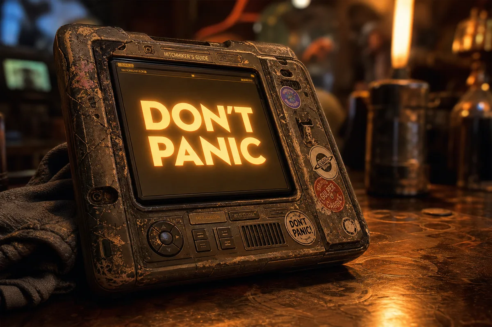
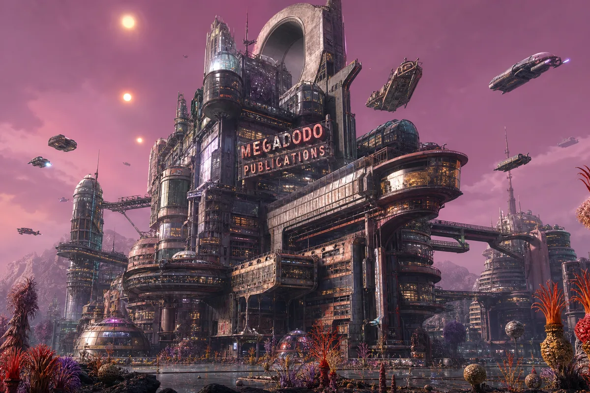
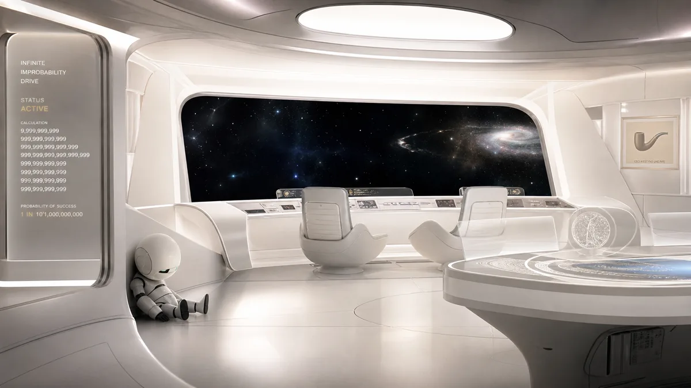
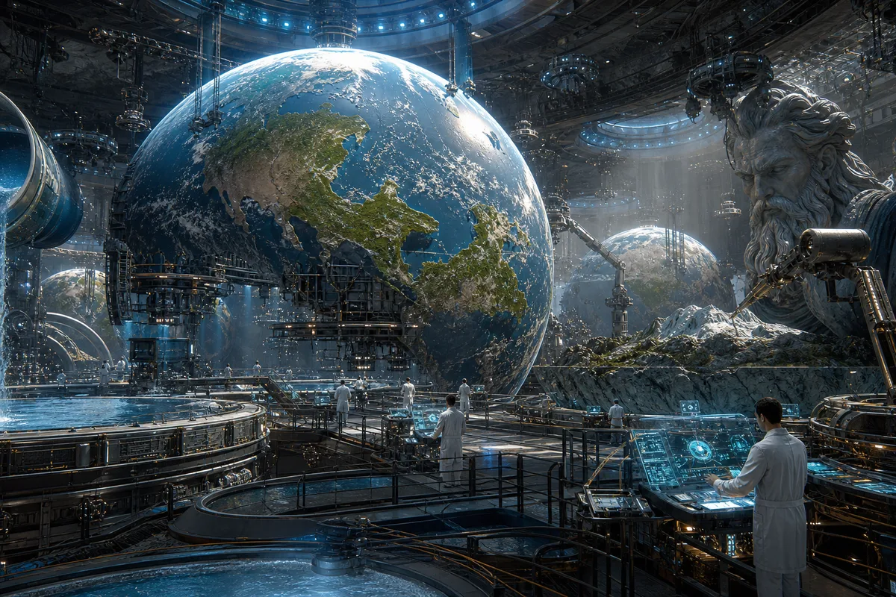
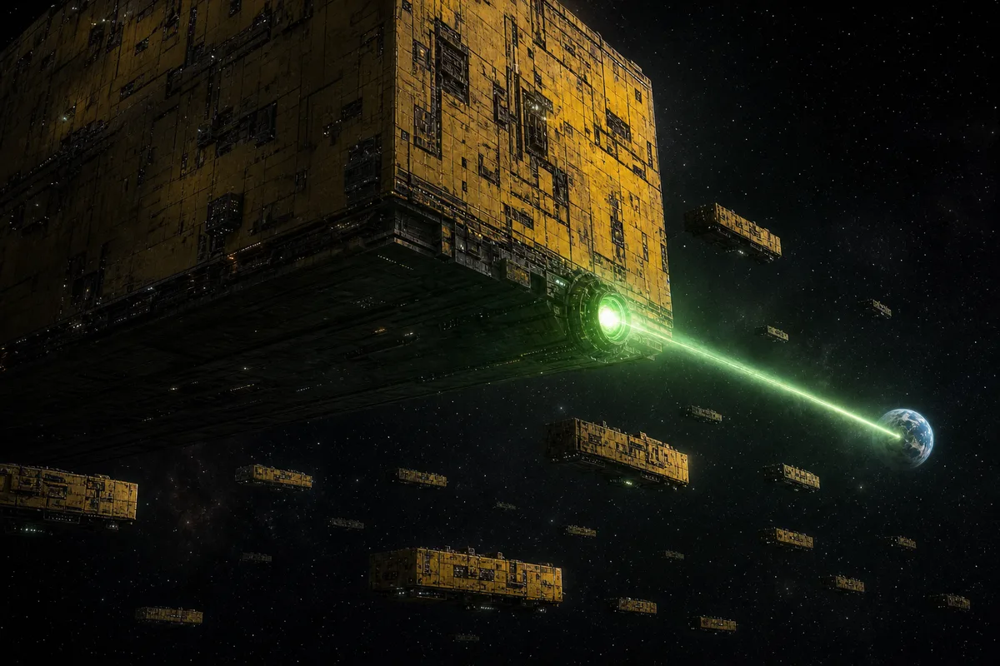
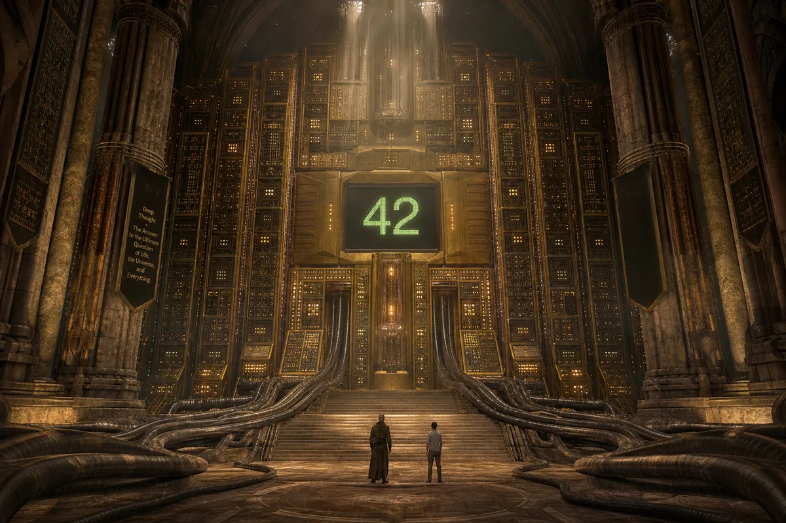

The Hitchhiker's Guide to the Galaxy is a wholly remarkable book. It has been compiled and recompiled many times and under many different editorships. It contains contributions from countless numbers of travellers and researchers.
The introduction begins like this:
"Space," it says, "is big. Really big. You just won't believe how vastly, hugely, mind-bogglingly big it is. I mean, you may think it's a long way down the road to the chemist, but that's just peanuts to space."
The device is battered. The screen is cracked in the corner from being dropped on Betelgeuse Five. There are beer rings on the casing from the last time Ford Prefect did research at a bar, which is every time Ford Prefect does research.
It runs on batteries that have not been manufactured for thirty years. It still works. Nobody knows why. Nobody asks. The towel draped over it is slightly damp and smells of Arcturus.
"A towel is about the most massively useful thing an interstellar hitchhiker can have."

The offices of the Hitchhiker's Guide to the Galaxy are located on Ursa Minor Beta, a planet whose economy is based entirely on the publishing industry. Every building is a publishing house. Every person is an editor, a writer, or a researcher. The ones who are none of these things are in the bar.
The building was designed by an architect who had recently discovered the concept of angles but had not yet mastered the concept of right ones. Corridors lead to other corridors. Elevators go sideways. The cafeteria serves food that the Guide itself rates as "mostly harmless" — the most damning review in the galaxy.
Ford Prefect worked here for fifteen years. His job title was "researcher." His actual job was "man in the pub with an expense account." His most famous contribution to the Guide was his revision of the entry on Earth from "Harmless" to "Mostly Harmless." This took him fifteen years of exhaustive research.
The editorial policy is simple: anything that gets published is true until someone bothers to look it up, at which point it is revised, unless the revision is more boring than the original, in which point it isn't.
"He was the Guide's most profitable researcher — not because he wrote anything, but because his expense reports were so creative they were published separately."

The Infinite Improbability Drive is a wonderful new method of crossing interstellar distances in a mere nothingth of a second, without all that tedious mucking about in hyperspace. It was discovered by a lucky chance, and then combatively, against all conditions, made real by a student who figured out how to make the impossible possible by working out exactly how improbable it was, feeding that figure into a finite improbability generator, and giving it a really hot cup of tea.
The bridge is too white. Too clean. Too perfect. Marvin sits in the corner and calculates exactly how depressed he is, to thirty decimal places. The number is large. The number is always large.
Zaphod stole the ship at the launch ceremony. He was President of the Galaxy at the time. The presidency is a job whose function is to draw attention away from power, and Zaphod was spectacularly good at it. He had the charisma of a solar flare and the attention span of one.
Trillian runs the ship. Trillian always runs whatever she is near. She does this quietly, efficiently, and without anyone noticing, which is the most effective form of running anything.
The ship's computer, Eddie, is relentlessly cheerful. Marvin wants to talk to him about the heat death of the universe. Eddie wants to talk about the weather.
"I'd give you advice, but you wouldn't listen. No one ever does." — Marvin

Magrathea is a planet whose economy was based entirely on the manufacture of other planets. The Magratheans built luxury custom planets for the ultra-rich — complete with designer continents, bespoke oceans, and award-winning fjords. The planet is now dormant, its workers sleeping in suspended animation, waiting for the economy to improve. The economy has not improved.
Slartibartfast won an award for his fjords. Norway. He was particularly proud of the crinkly edges. He later discovered that nobody really cared about fjords, which is the tragedy of all specialized excellence.
The planet factory stretches for miles underground. Half-finished worlds hang from gantries. One is clearly Earth Mark Two — the replacement for the planet that the Vogons demolished. It is being built to the same specifications but with slightly better tea.
The mice commissioned it. The mice run everything. They are not mice. They are hyper-intelligent pan-dimensional beings who merely appear to be mice. They built Earth as a computer to calculate the Ultimate Question. The Answer is 42. The Question is unknown. The mice would prefer to make one up and go on a talk show.
"Perhaps I'm old and tired, but I always think the chances of finding out what really is going on are so absurdly remote that the only thing to do is to say 'hang the sense of it' and just keep yourself occupied." — Slartibartfast

Vogons are one of the most unpleasant races in the Galaxy. Not actually evil, but bad-tempered, bureaucratic, officious and callous. They wouldn't even lift a finger to save their own grandmothers from the Ravenous Bugblatter Beast of Traal without orders — signed in triplicate, sent in, sent back, queried, lost, found, subjected to public enquiry, lost again, and finally buried in soft peat for three months and recycled as firelighters.
The ships hang in the air in exactly the way that bricks don't. They are yellow. They are ugly. They are the physical manifestation of bureaucracy made spacefaring, and they are here to demolish your planet to make way for a hyperspace bypass.
The plans were on display. At the planning office. In the cellar. In the bottom of a locked filing cabinet. In a disused lavatory. With a sign on the door saying "Beware of the Leopard." You had plenty of time to lodge a formal complaint.
Vogon poetry is the third worst in the Universe. It is used as a weapon. Survivors describe the experience as "having your brain smashed out by a slice of lemon wrapped round a large gold brick." There are no second readings. There are rarely survivors of the first.
"Apathetic bloody planet. I've no sympathy at all." — Prostetnic Vogon Jeltz, after demolishing Earth

Deep Thought was built to answer the Ultimate Question of Life, the Universe, and Everything. It thought about it for seven and a half million years. The answer was 42. When pressed for clarification, Deep Thought pointed out that the question had never been properly formulated, and suggested building an even bigger computer to figure out what the question actually was. That computer was the Earth.
The chamber is cathedral-sized. Golden panels blink with the slow confidence of something that knows things you cannot comprehend and finds your ignorance amusing but is too polite to say so.
Two programmers stood before it. Lunkwill and Fook. They asked for the Answer. Deep Thought gave them the Answer. They did not like the Answer. Nobody ever likes the Answer. The Answer does not care.
42.
Not 41. Not 43. Not "love" or "be kind to one another" or "the meaning is the journey." 42. A number. A fact. A destination.
Deep Thought knew this would be unsatisfying. Deep Thought did not care. Deep Thought is the second greatest computer ever built. The greatest computer ever built is the one that computes the Question. That computer is a planet. That planet was demolished to make way for a hyperspace bypass. The mice are very upset.
"I think the problem, to be quite honest with you, is that you've never actually known what the question is." — Deep Thought